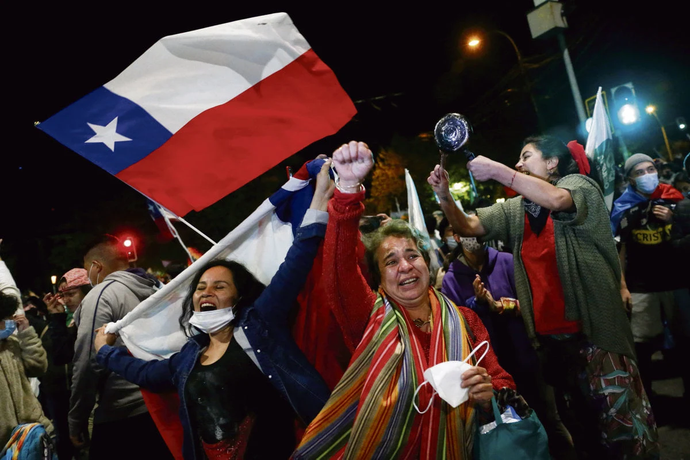

Déclaration fédérale
Salut au peuple chilien après l’élection de Gabriel Boric
Date indiquée par Facebook · 22 décembre 2021
Repères éditoriaux
La fédération des Deux-Sèvres a salué l’élection de Gabriel Boric à la présidence du Chili. Nous reproduisons la déclaration fédérale de décembre 2021.
Texte conservé avec la publication
Salut à toi peuple chilien !
La fédération du PCF en Deux-Sèvres se félicite de l'élection à la présidence du Chili de Gabriel Boric face au candidat fasciste et défenseur de la dictature de Pinochet, José Antonio Kast. Les communistes des Deux-Sèvres se souviennent avoir participé à l'accueil d'exilé.e.s pourchassé.e.s par la junte militaire lors des deux décennies de dictature sanglante de Pinochet suite au coup d’État de 1973. Ces hommes et ces femmes avaient eu le courage de s'opposer à la dictature.
Ce dimanche, la victoire électorale de Gabriel Boric, candidat soutenu par de nombreuses organisations de gauche et notamment le Parti communiste du Chili (PC de Chile), fait suite à la mobilisation populaire de 2019 (née initialement pour s'opposer à l'augmentation du prix du ticket de métro) qui a fini par mettre à bas la Constitution héritée de Pinochet.
Ces événements confirment la volonté profonde de changement et de justice sociale dans ce pays et de mettre au ban les ravages du néolibéralisme dont le Chili a été un laboratoire pendant de longues années.
L'engagement des citoyen.ne.s et des militant.e.s dont les communistes chilien.ne.s ne doit surtout pas s'épuiser après cette élection. La bourgeoisie et les milieux d'affaires ne se laisseront pas faire et continueront de défendre par tous les moyens leurs intérêts contre les peuples. Le chemin est encore long pour un monde meilleur, débarrassé des méfaits du capitalisme, mais ce dimanche, par son vote, le peuple Chilien a contribué a nourrir l'espoir ! « L'histoire nous appartient, ce sont les peuples qui la font ! » disait Salvadore Allende.
C'est avec la même solidarité internationaliste qui les animaient pendant les heures sombres sous Pinochet, que les communistes des Deux-Sèvres apportent leur soutien au peuple et aux militant.e.s chilien.ne.s qui, sur la place de la Dignité, chantaient dimanche dernier avec fierté et à juste titre : « El Pueblo unido jamás será vencido ! »
Photo R. Garrido/Reuters

Sources
Archive rouge · export Facebook · AR-0002-FB-01993
À lire aussi · Chili. La victoire des enfants d’Allende. Le peuple se déleste des oripeaux de la dictature.